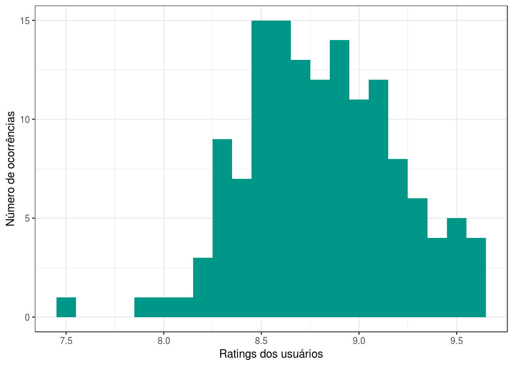
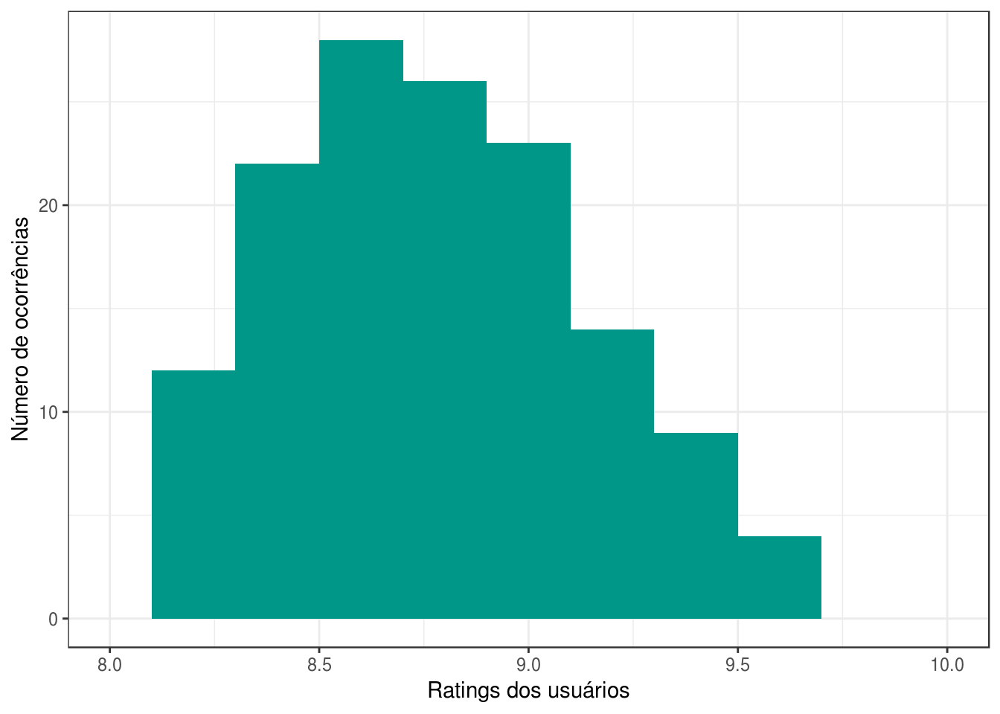
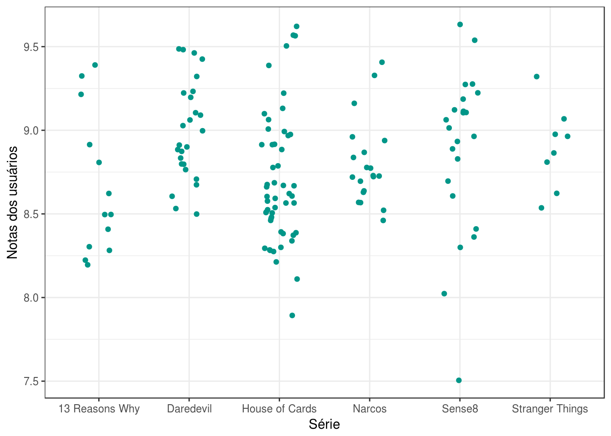
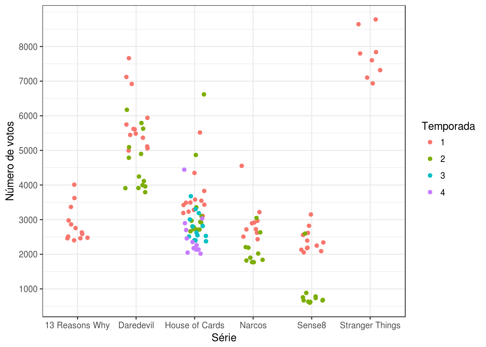
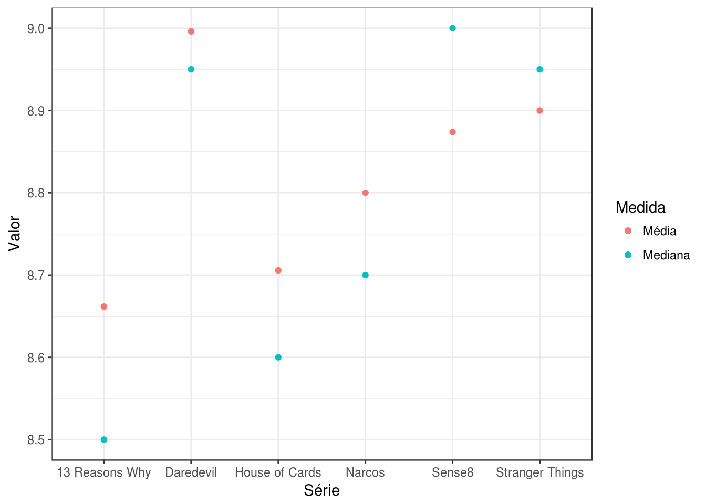
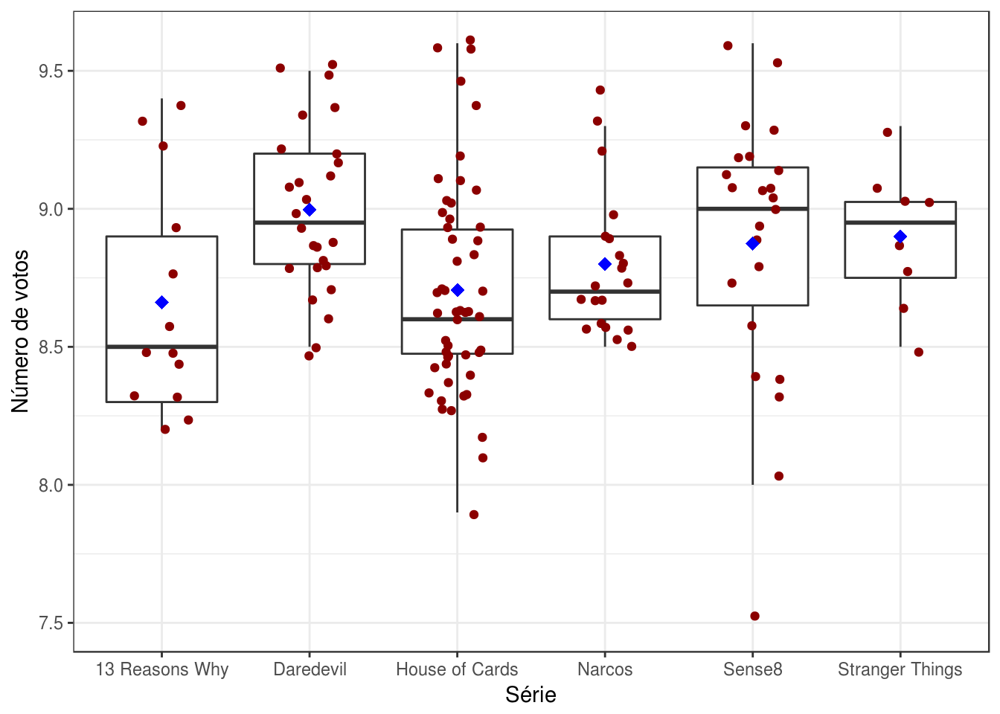
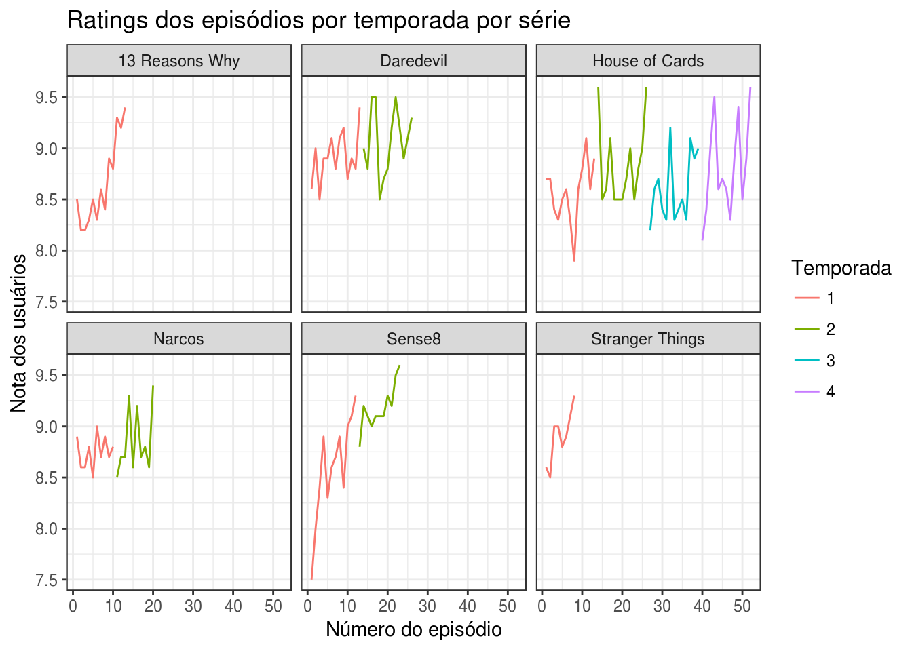
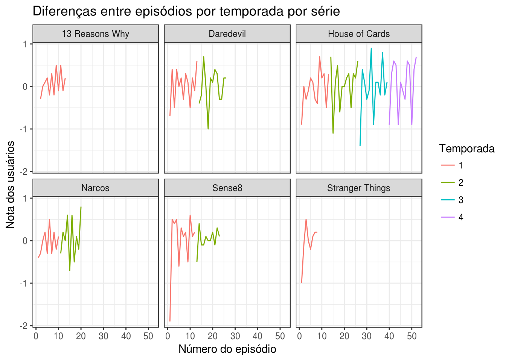
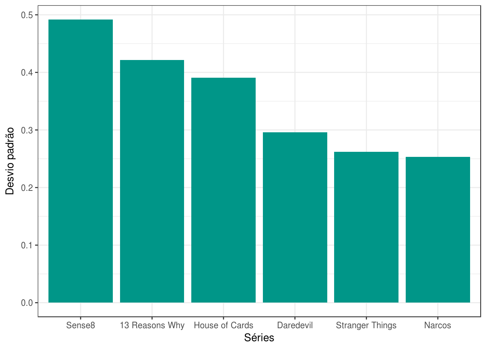

Análise exploratória - Séries Originais Netflix
Conjunto de dados utilizado
Análise realizada em 04/06/2017 para a disciplina de Análise de Dados 1 (Curso de Computação - UFCG)
Diante do conjunto de dados disponível para análise aqui optei por escolher as séries originais da Netflix. Ou seja, as séries produzidas e disponibilizadas pela Netflix para todo o mundo. A fonte dos dados é o IMDB, um banco de dados online com informação sobre música, filmes, séries, cinema, jogos, programas e comerciais de TV, atualmente percente a Amazon.
library(tidyverse)
theme_set(theme_bw())
series_imdb <- read_csv("series_from_imdb.csv")
series_netflix <- series_imdb %>%
filter(series_name %in% c("13 Reasons Why", "Daredevil", "House of Cards", "Narcos",
"Sense8", "Stranger Things")) %>%
mutate(series_name = factor(series_name))
Portanto as séries escolhidas para a análise são:
[1] "13 Reasons Why" "Daredevil" "House of Cards"
[4] "Narcos" "Sense8" "Stranger Things"
São 142 observações de 6 séries com 18 variáveis disponíveis. Na seção seguinte iremos descobrir sobre algumas delas.
Descrição das variáveis
A seguir estamos interessados em entender, de forma geral, quais as variáveis que iremos utilizar na análise e qual seu comportamento.
Cada observação no nosso conjunto de dados possui como variáveis:
[1] "series_name" "series_ep" "season" "url" "Episode" "UserRating" "UserVotes" "r1" "r10" "r2"
[11] "r3" "r4" "r5" "r6" "r7" "r8" "r9" "season_ep"
- series_name: o nome da série.
- series_ep: o número do episódio desde o primeiro ignorando temporadas.
- season_ep: o número do episódio dentro de uma temporada.
- url: link para a página do episódio no imdb.
- Episode: nome do episódio.
- UserRating: rating associado ao episódio pelo imdb. É explicado aqui.
- UserVotes: número de votos no imdb.
- r1, r2, …, r10: proporção de notas de usuários com score 1, 2, …, 10.
Panorama de algumas variáveis
Inicialmente se olharmos a distribuição dos ratings (notas) dadas aos episódios temos:
series_netflix %>%
ggplot(aes(UserRating)) +
geom_histogram(binwidth = .1, fill = "#009688") +
scale_x_continuous(breaks = seq(7, 10, 0.5)) +
labs(y = "Número de ocorrências", x = "Ratings dos usuários")

A largura das barras foi colocada em um décimo para uma representação da distribuição mais real, uma vez que a diferença mínima entre os ratings que variam é de 1 décimo. Sobre a distribuição é possível notar que a grande maioria das notas dadas aos episódios estão acima de 8. Ao olharmos para esse histograma (distribuição de frequências) podemos observar uma leve distorção à esquerda, quando a frequência dos dados está concentrada nos altos valores. No entanto, poucos valores estão abaixo de 8. Então se observássemos apenas os valores acima de 8 teríamos.
series_netflix %>%
ggplot(aes(UserRating)) +
geom_histogram(binwidth = .2, fill = "#009688") +
scale_x_continuous(breaks = seq(7, 10, 0.5), limits = c(8, 10)) +
labs(y = "Número de ocorrências", x = "Ratings dos usuários")

Agora, definindo o limite para as notas acima de 8 e ajustando a largura das barras para dois décimos, a distribuição parece um pouco mais unimodal, no centro está a maior quantidade de dados.
Ainda sobre ratings/notas, a visualização a seguir traz a distribuição das notas dos episódios por série.
series_netflix %>%
ggplot(aes(series_name, UserRating)) +
geom_jitter(color = "#009688", width = .2) +
labs(x = "Série", y = "Notas dos usuários")

Esse gráfico nos diz várias coisas. A primeira delas é que as séries possuem número de episódios distintos, House of Cards tem mais episódios que Stranger Things por exemplo. Outra observação importante é que as notas em algumas séries variam menos que em outras, ou seja, seus pontos estão mais próximos (verticalmente, eixo y das notas). As notas em Stranger Things variam menos do que em Sense8 por exemplo. Essa visualização também mostra como citado acima que a grande maioria das notas estão acima de 8.
Outros sumários gerais sobre as notas dos usuários (User Ratings) são:
UserRating
Min. :7.500
1st Qu.:8.500
Median :8.800
Mean :8.806
3rd Qu.:9.100
Max. :9.600
A média é de 8.806338 e a mediana, medida que divide os dados de forma que 50% das observações estão abaixo e os outros 50% estão acima, é de 8.8. O que é bem próximo considerando a precisão de 1 décimo das notas.
Outra variável númerica de interesse é a de número de votos (UserVotes), que pode ser um indício de quão “popular” é a série. Popular, nesse sentido, seria o fato de um maior número de pessoas terem atribuído a nota, o que não necessariamente quer dizer que a série é a mais assistida.
series_netflix %>%
ggplot(aes(series_name, UserVotes, color = as.factor(season))) +
geom_jitter(width = .2) +
scale_y_continuous(breaks = seq(0, 8000, 1000)) +
labs(x = "Série", y = "Número de votos", color= "Temporada")

Outra visualização que nos diz muito, dessa vez sobre a variável do número de votos. Percebemos que a exceção da segunda temporada de Sense8, as demais séries, geralmente, possuem mais de 2000 votos. Uma série se destaca das demais pelo alto número de votos, Stranger Things.
Outros sumários sobre o número de votos:
UserVotes
Min. : 601
1st Qu.:2402
Median :2898
Mean :3411
3rd Qu.:4007
Max. :8782
Desta vez, a média e a mediana são bem diferentes. A média é mais alta que a mediana, o que pode ser um indício de que alguns valores extremos (no caso, mais altos) afetaram a média. Provavelmente, como vimos na visualização anterior, o número de votos de Stranger Things afetou a média do conjunto de dados.
Agora que conhecemos melhor como o número de votos, e os ratings dos usuários se apresentam no dados das séries originais da Netflix, vamos apresentar o panorama das outras variáveis.
series_netflix.sumarizado <- series_netflix %>%
group_by(series_name) %>%
summarise(n_eps = n(),
n_seasons = max(season),
mean_rating = mean(UserRating),
median_rating = median(UserRating),
n_votes = sum(UserVotes),
sd = sd(UserRating))
kable(x = series_netflix.sumarizado %>%
select(series_name, n_seasons, n_eps),
col.names = c('Séries', 'Número de temporadas', 'Número de Episódios'))
| Séries | Número de temporadas | Número de Episódios |
|---|---|---|
| 13 Reasons Why | 1 | 13 |
| Daredevil | 2 | 26 |
| House of Cards | 4 | 52 |
| Narcos | 2 | 20 |
| Sense8 | 2 | 23 |
| Stranger Things | 1 | 8 |
A tabela acima apresenta uma visão sumarizada das variáveis de número de episódios, número de temporadas em cada série. A série que menos possui episódios é Stranger Things, enquanto que a que mais possui episódios é House of Cards. A média do número de episódios é de 23.6666667 e a média do número de temporadas é de 2.
Resposta para a pergunta 1
Qual das séries que você escolheu é mais bem avaliada no IMDB? A diferença é grande? Pequena?
Existem algumas possibilidades para determinar se uma série é melhor que outra ou não. Por exemplo, podemos definir que a média ou a mediana das notas de usuários de todos os episódios é um critério de forma que:
series_netflix.sumarizado %>%
ggplot(aes(series_name)) +
geom_point(aes(y = mean_rating, color = 'Média')) +
geom_point(aes(y = median_rating, color = 'Mediana')) +
labs(x = "Série", y = "Valor", color = "Medida")

Conforme a visualização, Daredevil é a série que possui a maior média de notas entre todos os episódios, e portanto, se adotarmos esse critério é a série mais bem avaliada.
Outro critério que pode ser usado é a mediana, e nesse caso a série mais bem avaliada é Sense8.
Ou seja dependendo do critério utilizado pode ser que o resultado da série mais bem avaliada mude. Média e mediana são medidas que sumarizam os dados e portanto não conseguem representar todas as informações das observações, ou seja, por um lado é bom representar um conjunto maior de dados com um único número, por outro lado é ruim pois acaba-se perdendo informação.
series_netflix %>%
ggplot(aes(series_name, UserRating)) +
geom_boxplot(outlier.colour = NA) +
geom_jitter(width = .2, color = 'darkred') +
stat_summary(fun.y=mean, colour="blue", geom="point",
shape=18, size=3, show_guide = FALSE) +
labs(x = "Série", y = "Número de votos")

A partir dessa visualização passamos a ter mais informações sobre os dados. Podemos observar que a mediana, linha central da caixa (boxplot) é superior em Sense8, no entanto, a média (ponto em azul) em Daredevil é maior. Os outliers do boxplot foram retirados pois já estamos visualizando todo o conjunto de dados através do Scatter Plot (gráfico de dispersão).
13 Reasons Why, House of Cards e Narcos possuem medianas bem inferiores as demais e portanto já estão fora da disputa do prêmio de série mais bem avaliada. Sense8 é a série que possui maior variação nas notas atribuídas, ou seja, os episódios são avaliados com notas bem distintas, alguns são muito bem avaliados, outros muito mal. Esse fator faz com que essa série saia fora da disputa também. Uma forma de medir essa variação é determinar a diferença entre a nota mínima e a nota máxima de um episódio da série (amplitude).
Em Sense8 2.1, em Daredevil 1 e em Stranger Things 0.8.
Na grande final, temos Daredevil e Stranger Things, como a média de Daredevil é maior, se considerarmos essa métrica como critério de desempate, Daredevil é a série bem mais avaliada das séries escolhidas, embora a diferença seja pequena.
Ou seja, adotei o critério de que as 3 séries com maiores medianas iriam para uma segunda fase de avaliação, nessa segunda fase a variação dos dados, dessa vez medida pela diferença entre a maior e a menor avaliação, seria o critério de avaliação. E para as duas séries que passaram para a terceira fase, a média seria o critério de desempate. A série mais bem avaliada seguindo esses critérios foi Daredevil.
Claro que como são critérios escolhidos, existe uma certa subjetividade em determinar a série mais bem avaliada. Por exemplo, em análises futuras poderia se considerar a influência de outras variáveis como o número de votos ou ainda outras métricas para variação dos dados como a variância. Mas, por enquanto, os critérios que foram escolhidos são satisfatórios.
Resposta para a pergunta 2
Qual das séries que você escolheu tem episódios de qualidade mais irregular segundo o IMDB? A diferença é grande? Pequena?
A priori, definiremos iregularidade na qualidade dos episódios como a falta de tendência de crescimento dos episódios ao longo do tempo. Ou seja, em geral se a série vai aumentando ou diminuindo os ratings conforme seu andamento (passar do tempo).
Uma primeira visualização que pode ajudar a responder essa pergunta é:
series_netflix %>%
ggplot(aes(series_ep, UserRating, color = as.factor(season))) +
geom_line() +
facet_wrap(~ series_name) +
labs(x = "Número do episódio", y = "Nota dos usuários",
color = "Temporada", title = "Ratings dos episódios por temporada por série")

Observando o gráfico notamos que em 13 reasons Why apesar de alguns episódios apresentarem uma queda com relaçao ao anterior, a tendência é que as notas atribuídas aumentem a medida que os episódios vão passando. De forma semelhante acontece em Stranger Things e em Sense8. Ou seja, se considerarmos irregularidade na qualidade como a falta de tendência clara de queda ou subida no rating dos usuários durante maior parte da temporada, séries como Narcos, Daredevil e House of Cards são as que apresentam maior irregularidade.
series_netflix %>%
mutate(UserRating.lag = UserRating - lag(UserRating)) %>%
ggplot(aes(series_ep, UserRating.lag, color = as.factor(season))) +
geom_line() +
facet_wrap(~ series_name) +
labs(x = "Número do episódio", y = "Nota dos usuários",
color = "Temporada", title = "Diferenças entre episódios por temporada por série")

A visualização acima aponta para a diferença entre os ratings de um episódio e seu anterior. Ou seja, estamos tratando as notas das séries de maneira temporal (como uma série temporal), buscando entender como os episódios variam com relação ao anterior. Isso aponta para o conceito que irregularidade deixa de ser a tendência e passa a ser o quanto episódios variam com relação ao seu anterior. Uma leitura possível é que quanto mais próximo do 0 (eixo y - nota dos usuários) menos variação entre os episódios, e quanto mais as linhas vão se distanciando do 0, maior a variação.
Outra informação importante é o espaçamento entre os episódios, quanto mais juntos os “pulsos” maior é a frequência da diferença entre os episódios. Se os pulsos tem um “período” menor indica que um grupo de episódios em sequência obtiveram notas parecidas e possivelmente diferentes do episódio seguinte a esse grupo, como exemplo temos o começo da temporada de sense8, no qual observamos alguns grupos de episódios com notas parecidas fazendo com que o pulso tenha um período maior (os picos são mais largos).
Ao levarmos em conta as maiores variações (incluindo o quão distante essas variações estão do 0) e picos entre os episódios temos que House Of Cards possui a maior irregularidade na qualidade dos episódios.
Outra abordagem seria considerarmos irregularidade na qualidade em quão distante os valores observados encontram-se do valor esperado. Ou seja, se utilizarmos o desvio padrão, medida de dispersão, para indicar o quão próximo ou distantes o ponto vão estar do valor esperado(média), pode ser um indício de irregularidade na qualidade da série.
series_netflix.sumarizado %>%
ggplot(aes(reorder(series_name, -sd), sd)) +
geom_histogram(stat = "identity", fill = "#009688") +
labs(x = "Séries", y = "Desvio padrão")

Pelo gráfico notamos que Sense8 possui o maior desvio padrão e portanto, segundo essa outra abordagem, é a série que tem episódios de qualidade mais irregular dentre as analisadas no conjunto de dados.
A conclusão das abordagens diferem, o que mostra que a resposta para a pergunta não é absoluta mas pode ser considerada satisfatória e coerente diante dos dados e dos critérios utilizados.
Até a próxima análise!!!